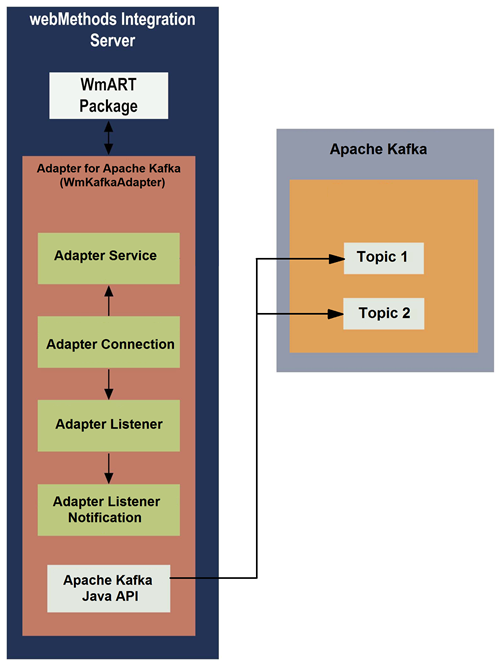

Architecture and Components
Adapter for Apache Kafka provides a set of user interfaces, services that enables you to create integration with Apache Kafka. The adapter is provided as a single package that must be installed on
Integration Server. For detailed installation instructions, see
Overview of installing and uninstalling
Adapter for Apache Kafka. For software requirements, see
webMethods Adapters System Requirements.
The following diagram describes the different architectural pieces involved in the integration process:
 webMethods Integration Server. Adapter for Apache Kafka
webMethods Integration Server. Adapter for Apache Kafka is installed and runs on
Integration Server.
(WmART). The WmART package provides a common framework for
webMethods Adapter for Apache Kafka version 9.6 and later to use
Integration Server's functionality, making Integration Server the run-time environment for
Adapter for Apache Kafka. The WmART package is installed with
Integration Server and it provides logging, error handling for the adapter, connections, notifications, and services.
Adapter for Apache Kafka. The
Adapter for Apache Kafka is delivered as a single package called WmKafkaAdapter. The adapter installation includes templates from which all adapter connections, notifications, and adapter services can be created.
Adapter for Apache Kafka provides user interfaces in:
Integration Server Administrator that enable you to configure and manage adapter connections, listeners, and notifications.
webMethods Deployer and
Designer user interfaces that will enable you to configure and manage adapter services. listeners, and notifications.
Adapter services. Adapter services enable
Adapter for Apache Kafka to produce and consume messages from Apache Kafka destinations(topics). The adapter provides service templates that enable you to configure service templates. For a detailed description of adapter services, see
Adapter Services Adapter connections. Adapter connections enable the
Integration Server to connect to Apache Kafka at runtime. You must configure an adapter connection before you can configure adapter services. For a detailed description of adapter connections, see
Adapter Connections Adapter Listener. Adapter listener monitors the Apache Kafka topics and passes the messages to a listener notification. You must configure adapter listeners before you configure adapter notifications.
Adapter for Apache Kafka provides adapter listener templates that enable you to configure listeners, which monitors a Apache Kafka topic for messages. For a detailed description of adapter listener, see
Listeners Adapter Listener Notifications. Adapter notifications enable the
Adapter for Apache Kafka to listen to and consume messages from Apache Kafka destinations (topics). The
Adapter for Apache Kafka provides an adapter notification template that enables you to configure adapter notifications.
Apache Kafka Java API. Apache Kafka Java API is a client jar provided by Kafka that connects to the Kafka cluster.
Apache Kafka. Apache Kafka is a distributed publish-subscribe messaging system designed to replace traditional message brokers. Message brokers are a type of middleware that translates messages of one language to another, usually more commonly-accepted language. Apache Kafka improves on traditional message brokers through advances in throughput, built-in partitioning, replication, latency and reliability.